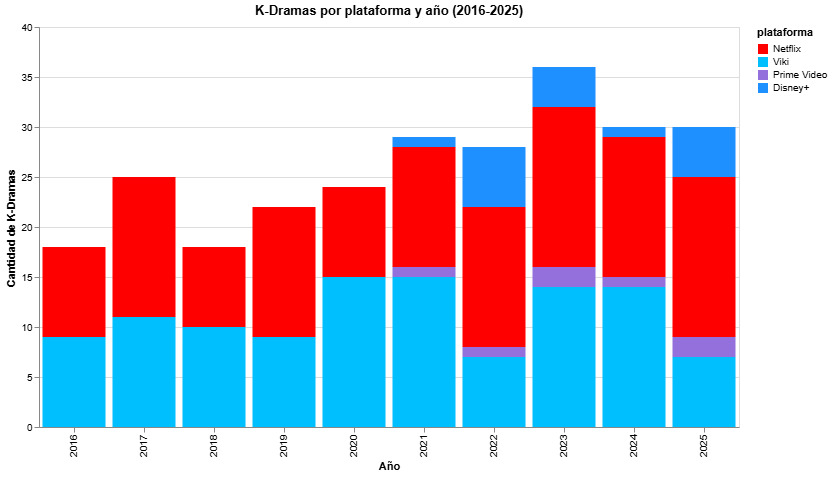

La industria de los K-Dramas ha experimentado un crecimiento sólido durante la última década, consolidándose como uno de los productos culturales más influyentes de la ola coreana o Hallyu. En un comienzo parecía ser un fenómeno limitado a nichos específicos de fanáticos de la cultura asiática, pero hoy se ha demostrado todo lo contrario. Ya forma parte del consumo audiovisual cotidiano de millones de personas alrededor del mundo, incluyendo Chile.

La visualización fue realizada a partir de producciones entre 2016 y 2025, y su disponibilidad en plataformas de streaming en Chile. Esto permite observar cómo este crecimiento no ha sido momentáneo, más bien es constante a lo largo de los años. También evidencia qué plataformas participaron en este crecimiento y cómo el streaming se convirtió en un actor clave internacionalmente y dentro de los catálogos disponibles para el público chileno.
Como muestra el gráfico, los años posteriores a 2020 presentan una mayor cantidad de K-Dramas disponibles en servicios de streaming en Chile . Este aumento coincide con el período de consolidación del consumo online durante la pandemia del COVID-19, momento en que las personas comenzaron a usar con mayor frecuencia estos servicios.
Las plataformas Netflix, Viki, Prime Video y Disney+ son actores fundamentales en la distribución de K-Dramas durante los últimos años. Sin embargo, el gráfico evidencia especialmente el crecimiento de Netflix dentro del mercado nacional, concentrando gran parte de las producciones disponibles para audiencias chilenas, en competencia directa con Viki. También muestra un cambio importante en la participación de las plataformas a partir de 2021. Tanto Prime Video como Disney+ comienzan a incorporar K-Dramas recién de ese año. Esto refleja cómo las plataformas globales comenzaron progresivamente a competir por el contenido coreano tras el aumento internacional de su popularidad.
El crecimiento responde a una mayor producción audiovisual surcoreana y también a un cambio en las estrategias de distribución internacional de las plataformas. Actualmente, las plataformas digitales permiten acceder a estrenos, subtítulos en español e incluso doblajes, eliminando las barreras idiomáticas que antes limitaban su alcance a partir de la masificación de las plataformas de streaming durante los últimos años.
Puedes descubrir producciones de distintos años aquí